| |
JAPAN 2018!!! =)
Osaka Universal Studios Japan Parque Espana Nagashima Spaland
Hiroshima & Kyoto Tobu Zoo Fuji-Q Highlands
Tokyo Joypolis Tokyo Dome City Yomiuriland Sea Paradise Hamanako Pal Pal Tokyo Disney Resort Yokohama Cosmoworld
Toshimaen
OMG!!! I know I've been in Japan for over 2 weeks now! I've seen a ton of cool stuff, visited a lot of parks and ridden many coasters I've been wanting to ride for years. I've seen the heart of Tokyo and seen so much in a country that I just absolutely love. But now, its time to go somewhere that may possibly be the place in Japan I've been wanting to go to the most.
This place is so cool that it has its very own train station. And yeah. This place needs it. =)
Walking by the Ambassador Hotel.
I don't have the money for all this, as this trip is on the cheap side. But this does look like a really nice hotel.
Yeah. I may have gotten here early, but yeah. This is Tokyo Disney. So yeah. It's gonna be crowded today.
Hey. This place is crowded, but honestly, the crowds here aren't as bad as the ones at Universal Studios Japan.
This place is only 35 years old!? How did people cope without Tokyo Disney Sea 36 years ago!?
No. I'm not in some random village. I'm at Tokyo Disney Sea.
OH MY GOD!!! I'M HERE!!! I'M HERE!!! I'M HERE!!!
 Hello Tower of Terror. I'll be riding you later on tonight. =)
Hello Tower of Terror. I'll be riding you later on tonight. =)
 Yeah. We have to start with what may be the most anticipated ride of the trip.
Yeah. We have to start with what may be the most anticipated ride of the trip.
*gasp* You mean there's more than just liquid rock in the middle of the Earth!?
 Almost there!
Almost there!
Damn it! Journey broke down on us! Lame! =(
Yeah. Tokyo Disney just decided, "Hey. You know what our park needs? A giant volcano in the middle!". The theming here is just....DAMN!!!
Ooh. Love the sea serpent fountain they have here.
Oh how quaint. They have an Electric Railway here.
This place may look horrendously mobbed, but as long as you're smart, you can navigate these crowds just fine.
 Tower of Terror amongst all the Christmas decorations.
Tower of Terror amongst all the Christmas decorations.
 I'll give my thoughts on the actual ride later on, but I'll just admit up front. Tokyo Tower has my favorite exterior. Seriously, this thing looks amazing.
I'll give my thoughts on the actual ride later on, but I'll just admit up front. Tokyo Tower has my favorite exterior. Seriously, this thing looks amazing.
Did they just buy a ship and just stick it here for theming!? Cause damn! I love that attention to detail!
Really hope that volcano is dormant and doesn't go off anytime soon. =P
Yes, Duffy is extremely popular here too,
While the park is right on the ocean, this is just a lake in the middle of the park solely for theming. Seriously, I do NOT feel like I'm in Japan right now.
I love exploring and all, but we have to go on a ride! So hey. Aquatopia.
Aquatopia is a very....intersting ride.
This ride doesn't really do all that much. It just goes around the water and spins in circles. But for some reason, it's just a ton of fun.
I have no idea why this is so fun, but I just really like this.
This place has a river of people flowing through it, but all I can think about is how much I love this place and how it kicks ass!
 Hello random tuba player.
Hello random tuba player.
What's up with all the fireworks over here!?
Damn it! I missed one of the shows they had! Oh well. There's so much more to check out over here.
Hey look! It's that female chipmunk. I think her name was Clarice. Apparently she was literally only in one Chip'N'Dale cartoon! But despite so little screen time, she still appears at Tokyo Disneysea. Is that specific cartoon really popular in Japan or do they just allow all Disney characters into the parade?
 Hey look! Journey to the Center of the Earth opened back up.
Hey look! Journey to the Center of the Earth opened back up.
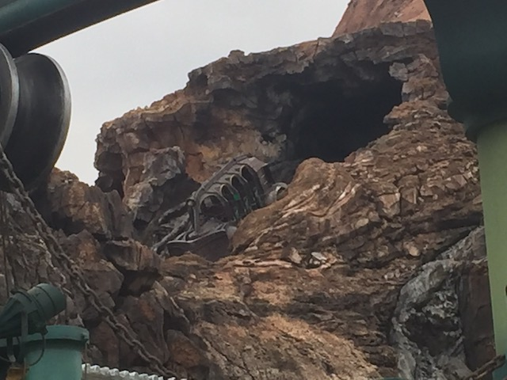
So Journey to the Center of the Earth is a ride that uses the same technology as Test Track and Radiator Springs Racers. Except the theming and the theme of this ride is so much better that the ride is just....DAMN!!!
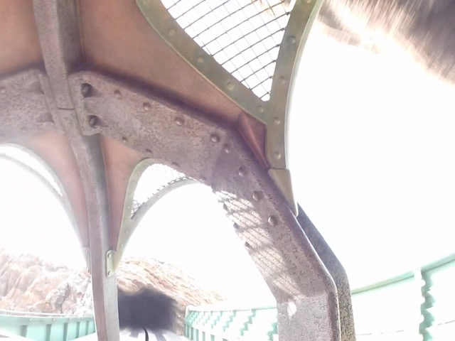
Sorry Test Track. I love you and all, but....JOURNEY IS THE BEST DARK RIDE EVER!!!
How many of you see the entrance to Vulcania? =P
Speaking of which, that's where we're having lunch today.
 So Vulcania is a Chinese Resteraunt right in the middle of Mysterious Island. The setting alone makes this one of the best resteraunts in any park.
So Vulcania is a Chinese Resteraunt right in the middle of Mysterious Island. The setting alone makes this one of the best resteraunts in any park.
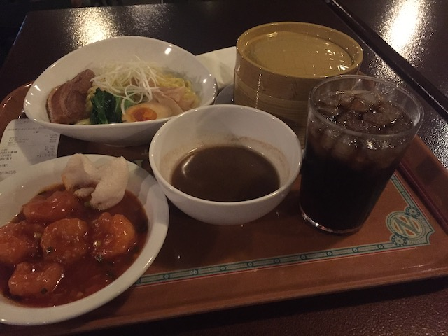
But on top of that, you have to eat here if you like Chinese Food. The dumplings are some of the best!
Excuse me, but is this place crowded today?
Don't be fooled. This place may have a globe right at the front of the park, but this is NOT a Universal park.
 Hey Tokyo Disney! It's Nove...*drool*!!!
Hey Tokyo Disney! It's Nove...*drool*!!!
I know Disney always goes above and beyond with their Christmas decorations, but DAMN!!! =)
"Hey fellas! I gotta question! How come I, as a doggo, can talk, but the doggo next to me can't!?"
I just can't get over the theming here! I want that to be my normal view so badly!
All right. Let's check out one of the newest rides they have here. Nemo and Friends Searider.
Good to see that this ride takes advantage of all the characters from Finding Dory.
So it's basically a simulator, similar to Star Tours. Only with the story of the Finding Nemo Submarines at Disneyland. Definetly my favorite of the Finding Nemo rides.
Feeling homesick? No worries, just head on over to the Mexico section and suddenly, I feel like I'm back home!
Hey look! Here's the only other Indiana Jones in a Disney park. So now I've got both.
Spoiler alert. I love Indiana Jones back home at Disneyland. And I also love it here.
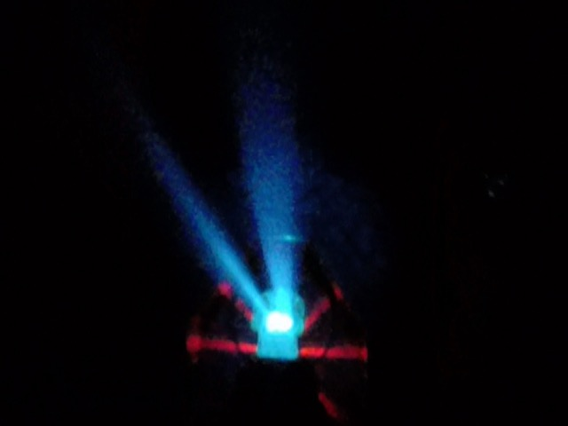
So instead of being the Temple of Doom and looking into the Eyes of Mara, this one is the temple of the Crystal Skull (No, it has nothing to do with crappy Indiana Jones 4. This came out 8 years before that).
One element found on Japanese Indiana Jones is the Fireball Ring, where a ring of fire is shot at the car. I really like that.
"F*ck this! I'm moving to Japan! No snakes over there!"
Of course, having a Single Riders Line will save your ass here. Those things are freaking awesome.
If you're too into cartoons and can't enjoy Indiana Jones, well, they've got Explorer Mickey Mouse for you.
 Just a quick reminder. We are IncredibleCOASTERS. So yeah. Time to ride a roller coaster.
Just a quick reminder. We are IncredibleCOASTERS. So yeah. Time to ride a roller coaster.
 Apparently, having a loop on their roller coaster is a big deal. Psst, hey locals, there are other coasters with inversions here in Tokyo. =P
Apparently, having a loop on their roller coaster is a big deal. Psst, hey locals, there are other coasters with inversions here in Tokyo. =P
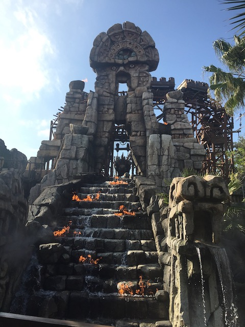
While this may look like a Crappy Pinfari Looper, it's actually a fun ride,
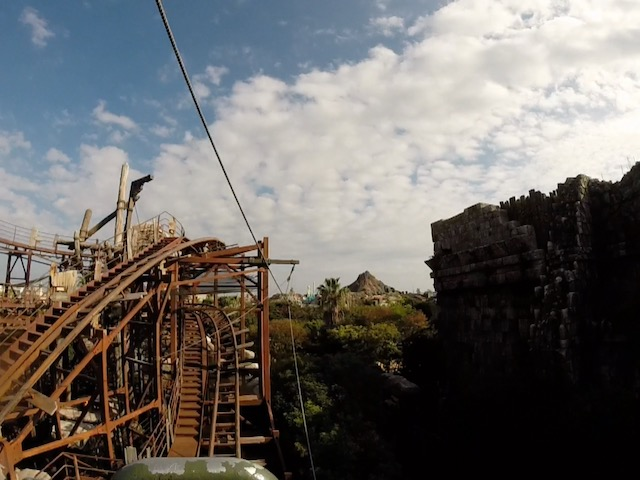
And yeah. It may look like a Pinfari from afar, but look closer, and this ride is WAY more stable than a Pinfari Looper that looks like it belongs at a carnival.
 And of course, being a Disney coaster with a loop, this ride scares a lot of people.
And of course, being a Disney coaster with a loop, this ride scares a lot of people.
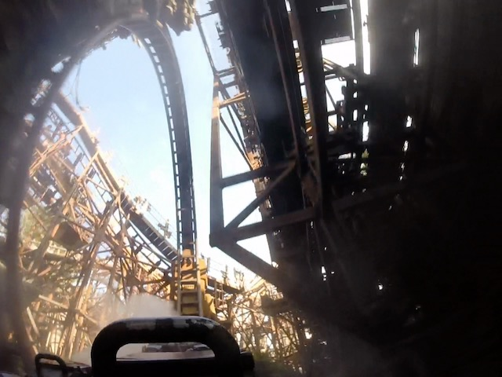
Sure, it's no California Screamin or Rock'N'Rollercoaster, but Raging Spirits is still a fun ride.
 Hello traditional water wheel.
Hello traditional water wheel.
All right. We've been to America, Myserious Island, and Mexico. Where else can we go? Oh, I know! The Arabian Coast!
 I'm not sure why this carousel works so much, but this just looks so cool.
I'm not sure why this carousel works so much, but this just looks so cool.
With how hot it gets in the Middle East, you better cherish that water.
All right. Time to check out one of the surprisingly best dark rides out there, Sinbad's Storybook Voyage.
EVERYONE RESTRAIN THE BIRD!!!
And again, Sinbad broke down. LAME!!! =(
I did not expect to like the Arabian Coast as much as I did. Seriously, this land is awesome. Part of it really makes me want to visit the Middle East, but yeah. That's being ruined by a toxic combination of our horrendous foreign policy and fundamentalist Islam.
OK. So if you've read ANY Tokyo Disney Photo TRs (or just read about the park from anywhere), then you'll know that Tokyo Disney LOVES popcorn, and in particular, has all sorts of weird popcorn flavors that seem to be exclusive to the park.
For instance, our first popcorn flavor of the trip is Curry Popcorn.
Now this may sound really weird, and gross. But Curry Popcorn is REALLY good. It has a little bit of a curry kick to it, but it's not overwhelming. It tastes like it was seasoned with a sort of curry powder, where it's good, and has a flavorful kick, but won't overwhelm you if you don't like spicy foods. HIGHLY recommended.
Continuing with the theme of "Japan has all sorts of characters no one else cares about", you can meet Panchito in the Lost River Delta (Mexico) port of entry.
I've always been saying that the Three Caballeros (particuarly Jose & Panchito) are underrated. So of course, I had to stop and snap a crappy selfie with Panchito.
Hmm. Why are we heading back to the Arabian Coast so soon?
I keep forgetting that I'm in Japan while over here.
Can I buy my own Abu in there?
Jasmine with her own fountain.
 Wait. Jasmine's Flying Carpets? Shouldn't it be Aladdin's Flying Carpets?
Wait. Jasmine's Flying Carpets? Shouldn't it be Aladdin's Flying Carpets?
Oh Raja. Stop worrying. The fact that the golden tiger next to you has demon eyes is nothing to worry about.
Oh right! Sinbad's Storybook Voyage opened back up and now it's time to ride.
So Sinbad is a ride that is sort of like It's a Small World. Only MUCH better!
Bon Voyage Sinbad!
So the story is that Sinbad and his pet tiger, Chandu (who is AWESOME!!!) are off on a journey to get goods for his local village, and they come across some friendly characters on the way.
"Meow! No asshole! That's my treasure! It's mine! Meow! I'm Chandu!"
That giant may look like a threat, but no worries. He just wants to play music with you.
You see all the animatronics on this ride? There are TONS of them on this ride. And not only that, but they are very fluid, move a lot, and....it's just really impressive to see all the attention to detail Disney put on this ride!
Chandu being treated like the royalty he is. =)
This theming is here for a limited time only! Come one, come all, come see this amazing theming before it's gone and turns back into a parking lot!
So that Electric Railway is not only really good theming that enhances the atmosphere of the park. But it also works as a railway. I love that.
Sitting on that boat, relaxing while sailing around the lagoon in Tokyo Disney Sea. Sounds like a good evening to me.
Time for Popcorn Flavor #2. We're now eating Black Pepper Popcorn.
Black Pepper popcorn is another flavor where it sounds kind of strange. But it's really good. It's basically fresh popcorn, but with a lot of black pepper. Not too much where it ruins it, but enought to give it a nice kick.
Sunset falls upon Tokyo Disneysea. And more fun is to be had at night!
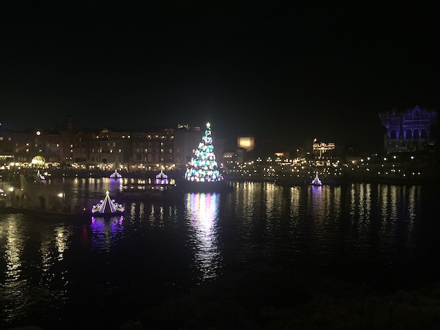
Hmm. I wonder what I'm doing waiting out here by the main lagoon?
Yep. We're watcing Japanese Fantasmic tonight.
Aww. I don't wanna go into Mickey's imagination. I wanna stay at Tokyo Disneysea!
 Hey! I really liked Fantasmic at Disneyland. So it's gonna be good to see how it is in Tokyo.
Hey! I really liked Fantasmic at Disneyland. So it's gonna be good to see how it is in Tokyo.
This one is a little different as it uses the World of Color technology.
Hey! Fireworks always makes anything better!
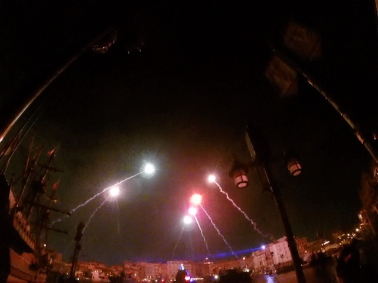
Mickey sending out the S.O.S Flares. His imagination is getting out of control!
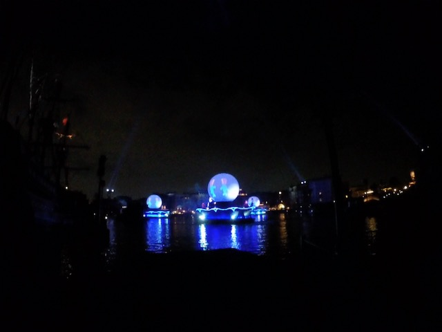
OK. One thing that is still a bummer is that there aren't as many villians in this one. Why is it only Florida that gets all the villians?
 But even so, Fantasmic is still a fantastic show that I highly recommend.
But even so, Fantasmic is still a fantastic show that I highly recommend.
Don't you dare think of hurting Tokyo Disneysea Malificent! F*ck putting Aurora to sleep! That's your real crime!
Ahh. Back in the Medeterannian Harbor. That's always good.
Captain Nemo doesn't want to be left out! He wants to journey to the center of the Earth too! Just give him a chance with his giant drill!
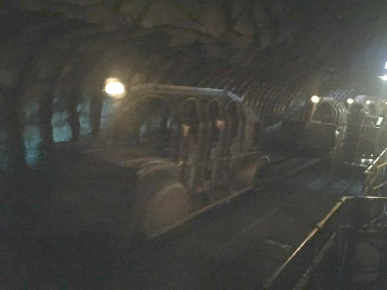
Night ride on Journey!
 I know there are tons of photos of the lava monster out there. But yeah. Holy Sh*t! This is one of the most impressive anamatronics from Disney! WE NEED MORE LAVA MONSTER!!!
I know there are tons of photos of the lava monster out there. But yeah. Holy Sh*t! This is one of the most impressive anamatronics from Disney! WE NEED MORE LAVA MONSTER!!!
So I went down to grab dinner, consisting of a Gyoza Dog (Yum) and I tried the Hot Wine (Damn you Logan! You lied to me and said it was amazing! It's good, but not any better than other wine! Damn you!) and I bumped into Brandon, Logan's friend from Tokyo. We ate dinner, chatted, and just had a really good meal.
Fun fact, the S.S. Columbia was inspired by the Queen Mary in Long Beach, which I do get to see a lot. But this is much better since it's in Tokyo Disneysea.
Popcorn Flavor #3. We decided to take a break from savory popcorn flavors and go for something more sweet. In this case, Strawberry.
This is sweet. Very sweet. Almost like a candy. I can easily some people being put off by it. But I have a big sweet tooth and this one was REALLY good for me.
It's technically not, but you do such a good job making it seem like Christmas that I'm just gonna pretend that it is. =)
♫Do you wanna build a Snowman? It doesn't have to be a Mickey Snowman.♫
All right. Time to check out another port. This one is Mermaid Lagoon.
Lose the fake antlers King Triton. I know you're just trying to get into the Christmas Spirit, but Dolphins > Reindeer.
I gotta hand it to you King Triton. Your port-of-entry is really awesome.
How can Mickey survive down here to conduct the band? Bah! Who cares! Just enjoy it under the sea!
OK. You know all those Best Kids Area awards that the Golden Ticket Awards does? They don't give it to Mermaid Lagoon. So f*ck them!
Hey look. They also have Jumping Jellyfish here. But it's much better here, as....it makes a lot more sense in the Little Mermaid area. Not to mention, having it indoors and themed to being underwater. It really helps with theming.
Sorry folks. The Ice Cream stand is closed for the night.
"HA HA! NO ICE CREAM FOR THE AMERICAN!"
 So that's why I'm down here. I'm here to do more credit whoring.
So that's why I'm down here. I'm here to do more credit whoring.
 But this isn't any ordinary coaster. First off, it's a Togo Rollerskater. But more importantly, I hit 600 on Flounder's Flying Fish!
But this isn't any ordinary coaster. First off, it's a Togo Rollerskater. But more importantly, I hit 600 on Flounder's Flying Fish!
 I don't care that it wound up being the kiddy coaster! Having a milestone at Tokyo Disneysea is F*CKING AWESOME!!!
I don't care that it wound up being the kiddy coaster! Having a milestone at Tokyo Disneysea is F*CKING AWESOME!!!
 And after waiting all day, the time has finally come. Our Tower of Terror fastpass is finally ready! =D
And after waiting all day, the time has finally come. Our Tower of Terror fastpass is finally ready! =D
Ooh. Love the snowflakes on the ground.
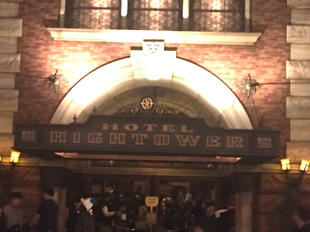
Boy. I sure have upgraded my hotel. I guess I figured I shouldn't be staying in a cheapass capsule hostel while visiting the Tokyo Disney Resort.
Ooh. All the theming is nice in here.
OK. So the Twilight Zone isn't popular in Japan (Seriously, that show is awesome. Highly recommended), so instead of doing the Twilight Zone, they have a completely custom story for Japanese Tower of Terror.
 So the story of this ride is that Harrison Hightower is a wealthy asshole who inherits a mansion from his dad. Being a savy businessman, he rennovates the place and turns it into a fancy hotel. However, when he goes on a safari in Africa, he comes across an uncontacted tribe, who idolizes a god named Shikiri. Wanting it all for himself, he takes Shikiri back to his hotel in NYC. But when he gets back, Mr. Hightower dissapears and everyone assumes that Shikiri is responsible, and that the hotel is now haunted.
So the story of this ride is that Harrison Hightower is a wealthy asshole who inherits a mansion from his dad. Being a savy businessman, he rennovates the place and turns it into a fancy hotel. However, when he goes on a safari in Africa, he comes across an uncontacted tribe, who idolizes a god named Shikiri. Wanting it all for himself, he takes Shikiri back to his hotel in NYC. But when he gets back, Mr. Hightower dissapears and everyone assumes that Shikiri is responsible, and that the hotel is now haunted.
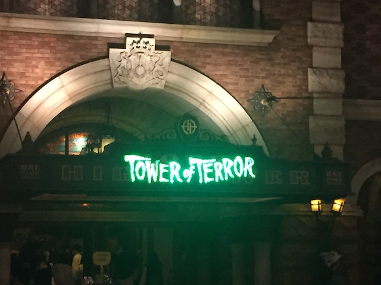
I have to admit. Japanese Tower has the best story of them all. Shikiri > Twilight Zone > Guardians of the Galaxy.
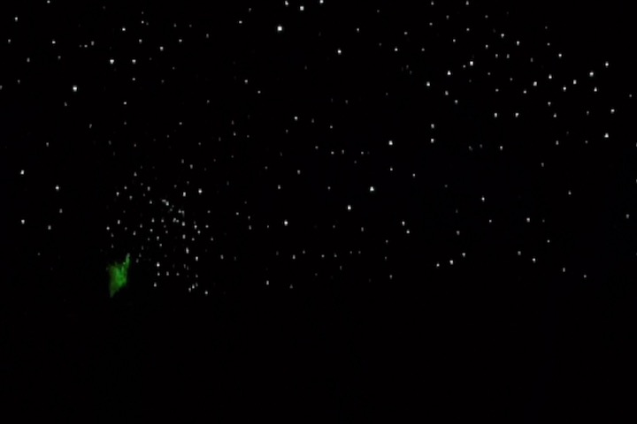
Now for one of the few dissapointments of the trip. Japanese Tower of Terror. Storywise, it's the best. I absolutely LOVE the story they have here. But putting that aside and just focusing on the actual ride, this is the weakest Tower of Terror. I thought it was gonna be a clone of French Tower of Terror or the old California Tower. But sadly, this seemed to have less drops, and it didn't seem like the airtime was quite as strong. Still really cool as the drops are still really fun, and I LOVE Shikiri that much. I just wish it had a better drop program. =(
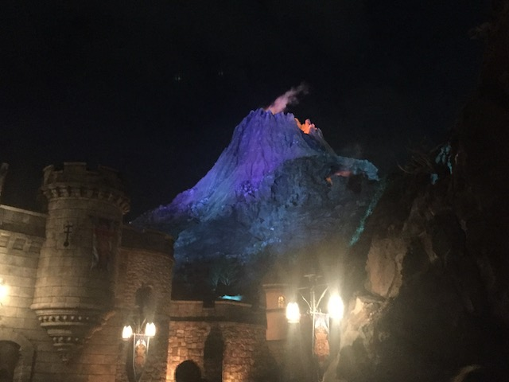
MOUNT PROMETHEUS GOES BOOM!!!
I love you Tokyo DisneySea.
Well, Tokyo Disney Sea is amazing. And that's just one of the parks here! For tomorrow, we get to check out the other one!
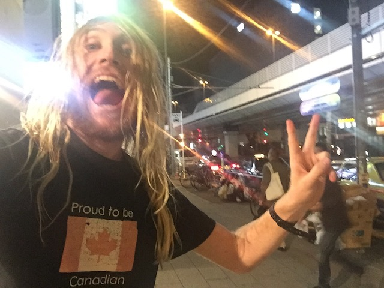
Just a quick "JAPAN IS AWESOME!!!" photo.
OK. Day 2 of the Tokyo Disney Resort. And oh god. Umbrellas? Looks like the weather is not on our side today.
Oh well. When you're at a Disney Park, half of all the rides are indoors. So rain doesn't affect your day like it does at most theme parks.
So we were at Tokyo Disneysea yesterday. This means that today is our Tokyo Disneyland day.
How do you know that this is Tokyo Disneyland? Because like all Japanese Parks, Main Street here is covered. ;)
I found the castle!
 So Tokyo Disneyland's castle is essentially the same castle as Magic Kingdom in Florida.
So Tokyo Disneyland's castle is essentially the same castle as Magic Kingdom in Florida.
We got our Monsters Inc. fastpass. Looking foreward to riding that later today.
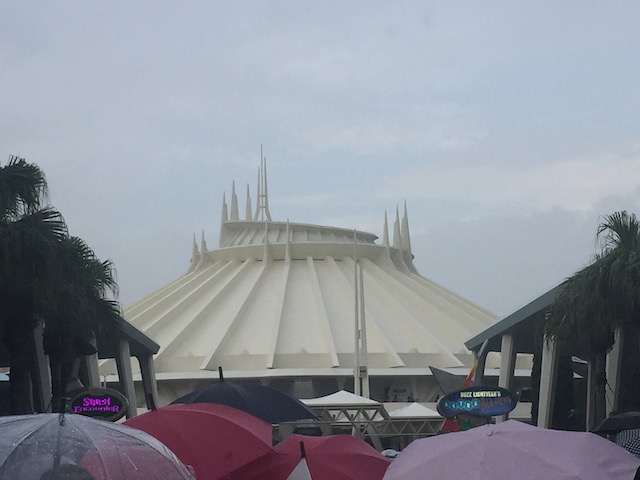
OK. We got our Monsters fastpass, but now it's time for our first ride at Tokyo Disneyland.
 Yep. We're riding Space Mountain now.
Yep. We're riding Space Mountain now.
This Space Mountain still has the escelator. Japan is awesome.
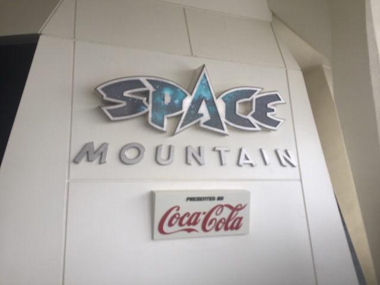
It's a classic staple. Seriously, I think Space Mountain might be the the only ride at ALL the Disney parks (Damn you Shanghai Disneyland! You ruined it from being 6/6)!
Glad I got in line before the line really began to grow.
Screw the Milky Way Galaxy! I wanna travel to the Coca Cola Galaxy!
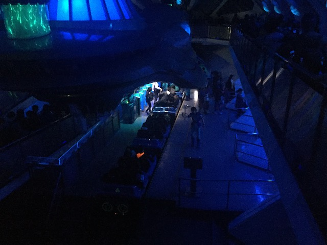
Sad to say this, but this is the worst out of all the Space Mountains.
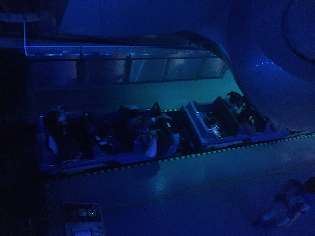
This Space Mountain honestly...feels like it was stuck in the 70s. I feel like Japan's Space Mountain is what California's used to be like before it got it's big makeover. But seriously, music is super important to Space Mountain.
*Goofy Laugh* Merry Christmas y'all! Hope you enjoy....what's that!? It's November!? Aww, shucks! Oh well! Merry Christmas!
Ooh! I wonder what is under construction right here? I know they're building a big Beauty and the Beast ride for 2020 (Can't wait to come back and ride that). Maybe this is that. =)
 Considering how this ride gets really busy, we better get this out of the way first.
Considering how this ride gets really busy, we better get this out of the way first.
Yes, we're bothering to ride Japanese Small World.
Excuse me. But what time is it?
Who ate all the baby oysters!?
 Hey look. There's a country I've never been to before.
Hey look. There's a country I've never been to before.
Is it stuck in your head yet? >=)
One of the upsides of riding Small World in foreign countries is that you get to see how your home country is portrayed by other people.
Which country are you representing by riding the Carousel?
I see Disney constantly updating all their Disney characters around the world. For here's Moana.
Standard Disneyland Castle Cliche Photo.
Fantasyland Crowds Photo.
Ooh! They have PhilharMagic here too!
Of course, all the sentiant instruments from Fantasia are gonna show up here.
I'm happy that this is becoming more popular and that they just opened this up at DCA, because I really like this show.
Why is Hades here? He's one of the few Disney Villians without a villian song.
Just like back home at Disneyland, Peter Pan is the most popular Fantasyland dark ride (Well, with one exception) here too.
 Not sure what parade this is. But hey. How often do you see Max (They probably hide him to hide the fact that Goofy's f*cked before)?
Not sure what parade this is. But hey. How often do you see Max (They probably hide him to hide the fact that Goofy's f*cked before)?
NO!!! WE'RE TOO LATE!!! ALL THE POOH FASTPASSES ARE SOLD OUT!!! ='(
 While we can't get a fastpass for Pooh, we can at least still get a new popcorn credit. Popcorn Flavor #4. Honey.
While we can't get a fastpass for Pooh, we can at least still get a new popcorn credit. Popcorn Flavor #4. Honey.
"Hoo-hoo-hoo-hoo! I'm making some Honey Popcorn for my good pal, Pooh! Hey! No! None for you assholes! Now shoo! T.T.F.N Ta-ta for now!"
OK. So the Honey Popcorn is the flavor closest to a traditional normal flavor. It's got a nice sweet taste to it. Not quite as sweet as your standard Kettle Corn, but still has a nice taste to it. Thumbs up.
For everyone who was ever turned into a slave by their step-family, this statue to commemorate you.
Hello random grassy area at Tokyo Disneyland.
Stitch Encounter!? They stole the ride from Florida and put it here!? Really!?
Nope. It turns out that Stitch Encounter is a show like Turtle Talk with Crush where people in the audience could talk to Stitch.
Yeah. Being here felt awkward. As....I don't speak Japanese. So if Stitch called on me, I'd probably just stare blankly and say "Kon'nichiwa. Watashinonamaeha Kevin. Uh.....Sumimasen. Gomen'nasai" (Hello. My name is Kevin. Uh.....Excuse Me. Sorry). Yeah. I'm not gonna do this again next time.
Surprisingly, Haunted Mansion Holiday doesn't have a long wait. And of course, this version is better!
No. This has nothing to do with the Nightmare Before Christmas. These are just standard Japanese characters.
I see a lot of people ready to see these two holidays colliding.
Glad to see more Japanese names on the naughty and nice list.
It's mostly the same standard Haunted Mansion, but there are a couple extra scenes that we don't have back home.
For instance, The California version doesn't have Lock, Shock, and Barrel.
All right. Time for lunch. We can eat here.
Can Disneyland please have curry!? I want this!!
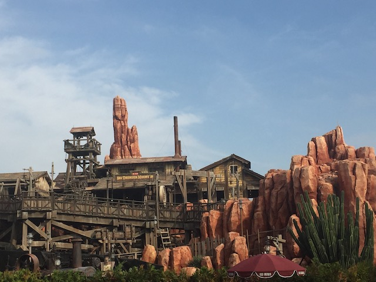
Big Thunder Mountain is closed? NOOOOO!!!!!
But seriously, while this is annoying and all. But at least it wasn't a surprise. I knew this would be closed since April 2018 when another friend visited Tokyo Disney and mentioned that Pooh was closed for maintanence, which made me check the website for my trip, and sure enough, Thunder Mountain was closed the entire three weeks I was visiting Japan. So I at least had ample warning about this. And hey, I'll come back and ride it next time.
Well, Thunder Mountain may be closed, but I believe there's another famous Disney Mountain that we can check out.
Yep. Time to check out Splash Mountain.
 And with Tokyo Splash Mountain done, I've now collected ALL the Splash Mountains.
And with Tokyo Splash Mountain done, I've now collected ALL the Splash Mountains.
This may possibly be the only ride that transports you to the Deep South (Hey, gonna be back there next week)
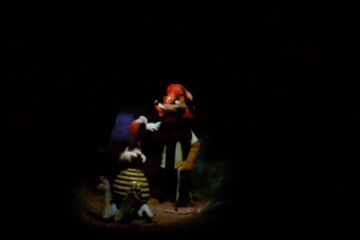
Damn kids these days with their honey pots! Back in my day, we caught our rabbits with a tar baby!
 Still the best log flume ever.
Still the best log flume ever.
Looks like Fantasyland is popular around here. Oh wait. This is Tokyo Disneyland. It's always crowded here. =)
 Another random parade that I missed. But hey, those happen all the time at Tokyo Disneyland.
Another random parade that I missed. But hey, those happen all the time at Tokyo Disneyland.
All right. Time to wait in the one long line of Tokyo Disneyland. Yep. Time to suck it up and just wait for one of the rides that I've been curious in for years. Pooh's Hunny Hunt.
So some of you who aren't familiar with Tokyo Disneyland may be wondering why I'm so excited for just a Fantasyland Dark Ride. Well, let me tell you. This is not your ordinary Fantasyland Dark Ride.
Rabbit likes big butts and he can not lie!
"I say, Pooh. That is not the proper cliff jumping position."
Yeah. Pooh's Hunny Hunt is a trackless dark ride.
 So as a trackless dark ride, meaning you can just go all around the room, and since there's no track you never quite know where you're going (Fun fact. Aquatopia also uses the trackless dark ride technology).
So as a trackless dark ride, meaning you can just go all around the room, and since there's no track you never quite know where you're going (Fun fact. Aquatopia also uses the trackless dark ride technology).
 Easily, my favorite part of Pooh's Hunny Hunt is the Tigger Room, where you go into a room, and you bounce around with tigger. And it literally feels like you're bouncing. It's just a ton of fun. And now, I have the Japanese version of "The Wonderful Thing About Tiggers" stuck in my head!
Easily, my favorite part of Pooh's Hunny Hunt is the Tigger Room, where you go into a room, and you bounce around with tigger. And it literally feels like you're bouncing. It's just a ton of fun. And now, I have the Japanese version of "The Wonderful Thing About Tiggers" stuck in my head!
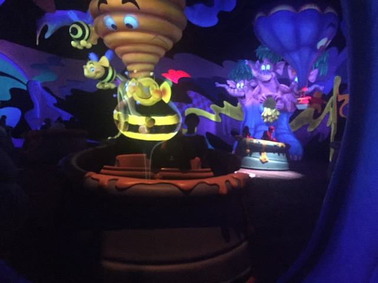
See the room with all the Heffelumps & Woozles, thanks to it being a trackless dark ride, all the cars sort of dance to the music, and interact with one another, and....I love this ride.
With an appetite for honey like that, no wonder all the bees are going extinct. =P
No problem Eeyore. Please raise your self-esteem. Here, take some Prozac.
"Hey Gideon! Do you see any children for us to kidnap?"
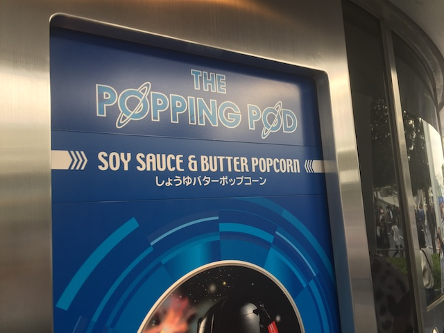
Popcorn Flavor #5. And this is a weird one. Soy Sauce & Butter!?
HOLY CRAP!!! WHO KNEW SOY SAUCE & BUTTER POPCORN WAS SO GOOD!!! I did NOT expect to like this flavor as much as I did. Had no idea what to expect, but I absolutely love this flavor. It's very salty, got a very fatty, buttery taste, not too much, but enough where you can taste all the salty fatty goodness. The brown peices are the best!!!
Oh look. Another Disneyland Staple I haven't tried in Tokyo.
Hey! Once you're done destroying the Earth, come over here and destroy another planet!
These guys would be nice and all, but you know who we really want? That damn rebel spy!
I miss the old trips where we just went to the Endor moon with no problems.
Hey look! My Monsters Ride 'N' Seek Fastpass is finally valid!
What!? You don't scare anymore!? I gues you just don't care anymore! ='(
So Monsters Ride 'N' Seek is essentially a shooting dark ride. Except you're taking your flashlights and using them to find Boo throughout the ride.
It may not be the best ride ever, but it still is a lot of fun, and I do wish that they had this at DCA instead of the Monsters Inc. ride they currently have.
I found Roz with the flashlights!
♫Dashing through the snow. In a one-Pluto open sleigh.♫
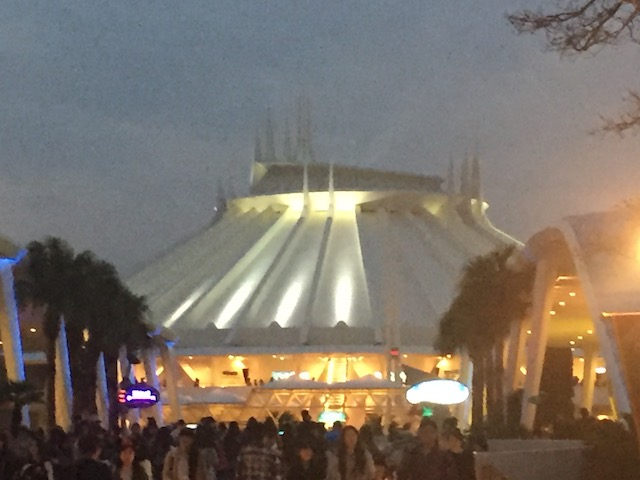
Space Mountain at night.
Tokyo Disney Castle at night.
 ♫Ooh! I wanna be like you! I wanna walk like you, talk like you, live in Tokyo Disneyland like you!♫
♫Ooh! I wanna be like you! I wanna walk like you, talk like you, live in Tokyo Disneyland like you!♫
Hey. Not the best meal by far, but hey. It's still really good Tokyo Disney food.
Little touches that don't mean anything, but I still really like them.
♫Yo Ho! Yo Ho! A Japanese Pirate's Lifes for Me!♫
"Arr. There be Johnny Depp down here."
Nothing particuarly special about Japanese Pirates. It's mostly the same standard ride. Well, with one exception.
JAPAN STILL HAS THE REDHEAD!!! JAPAN STILL HAS THE REDHEAD!!!
Another thing to note about Japanese Pirates. It doesn't have the lifthill like the rest of them. It just lets you off after all the cannons are fired and the pirates are in prison, and you take an escelator up to the surface, much like on Haunted Mansion. Not sure if I prefer this or having the lifthill.
Time for another weird one. Popcorn Flavor #6. Barbecue.
OK. This one, I wasn't crazy for. I guess there was a little bit of a smoky hint to it, but eh. Kind of underwhelming. Not bad, but....far from the best.
OK. I may not be the biggest parade guy around. But I had to stop and see this one since...
The Main Street Electrical Parade is going on! And yay! The song is stuck in my head now!
Hey look! There's a movie that doesn't get a lot of love (even with its recent remake).
Love all the lights they have for the parade.
Really wish this show still was around more as....it's really good.
 Oh yeah. There's one last coaster for me to ride at Tokyo Disneyland.
Oh yeah. There's one last coaster for me to ride at Tokyo Disneyland.
 You know what makes any Roller Skater ride better? Watching fireworks while riding it. =)
You know what makes any Roller Skater ride better? Watching fireworks while riding it. =)
I know I don't ride the one at Disneyland very often, but these are fun rides.
Oh yeah. Tokyo Disneyland is also the only other Disney park besides Disneyland to feature Cartoon Spin. Bummer as this ride is a lot of fun.
We need more rides based on Who Framed Roger Rabbit! Seriously, Best Disney Movie ever (No, I'm not kidding)!
You know, Buzz Lightyear has always been one of those rides I've always skipped at Disney Parks not in California, missing it in both Florida and Paris. I nearly decided to skip it here too for the sake of tradition. But it's only amusing if I skip it without thinking about it. So yeah. I'm doing Japanese Buzz Lightyear.
"Wait. Am I a space ranger who's actually saving the galaxy or am I just some child's toy? I'm confused now."
Blugh. I know I suck at shooting dark rides. But even by my own weak standards, I did a terrible job at Japanese Buzz.
We have so much time and have pretty much done everything that....Let's check out the 2nd showing of the Light the Night Fireworks!
These fireworks are essentially standard Disney Fireworks set to Disney songs with special effects and cool illustrations on the castle.
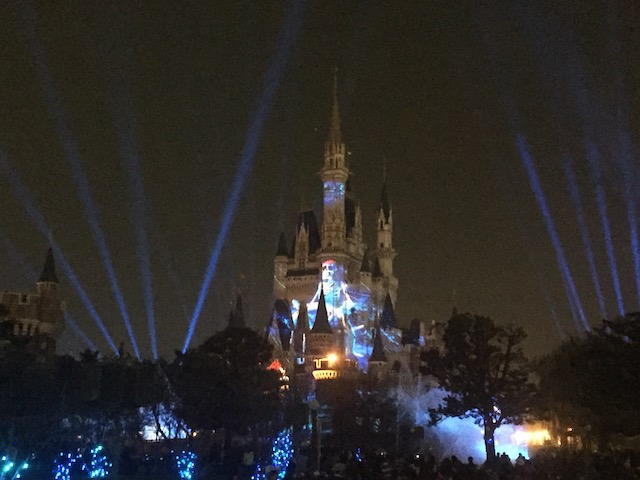
But with that said, it's still a really cool show.
FIRE!!!! BURN IT ALL TO THE GROUND!!!!
Not to mention the fact that this show is also a big strobe show is really cool. Disney Rave!
Highly recommended if visitng Tokyo Disneyland.
 Hmm. I wonder what's so special about that store that makes everyone head over there?
Hmm. I wonder what's so special about that store that makes everyone head over there?
All the hype for this place is true. Tokyo Disney is amazing.
It's not part of the Tokyo Disney Resort, but these penguins are cool too.
On the train for Day 3 of Tokyo Disney, and hey look! A random ferris wheel!
Hooray! We're back at Tokyo Disney!
OK. So there were these protesters right in the Tokyo Disney Resort, right in between the two parks. I have no idea what they were protesting about since I can't understand what they're saying, I can't read their signs, and I don't know jack-sh*t about Japanese politics. But if there's any place on Earth where I want to be free from the mental hell that's politics, it's here.
I see you fairy statues right outside Tokyo Disney.
And...I have returned to Tokyo Disneysea!
Now some of you may be wondering "Why haven't you talked about the 20,000 Leagues Under the Sea ride?". Well....it too, was sadly closed during my visit.
Oh well. I'll just have to do it next time.
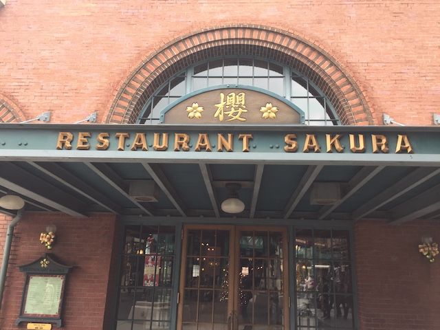
Hmm. This seems like an intersting place for breakfast.
Yeah. I'm not really a big breakfast person. But hey. A Black Pepper Teriyaki Chicken Roll sounds good to me.
This sh*t is so good. And it's great for a quick little snack.
Hey Duffy Fans! Here you go!
Thank you Mickey and Minnie for reminding me that I'm at Tokyo Disney Sea. If not for you, I'd probably start thinking that I was on the U.S East Coast.
OK. Time for a more normal flavor. Popcorn Flavor #7. Chocolate.
It tastes better than you think. Most people think of Chocolate Popcorn as popcorn just coated in chocolate. This is not that. I'm not sure if they dusted it in Chocolate powder or what. But it did not have the standard frosting-like coating I usually see on Chocolate-covered popcorn. And this was better.
 Why yes. A morning ride on Tower of Terror does sound good.
Why yes. A morning ride on Tower of Terror does sound good.
They seriously need to make a movie based on Tokyo Tower of Terror. Obviously, Guardians of the Galaxy has the movies as part of the Marvel Cinematic Universe, and the original Twilight Zone version has its own movie. I wanna see Shikiri in a movie damn it! If you can make all those crappy Disney Channel Movies, then surely you can make a movie based on this!
OK. So the one ride I skipped due to crowds at Tokyo Disney was Toy Story Mania since....while I do love it, it's also something we have back at DCA. And it's SUPER popular here, and I just don't want to deal with waiting for it, or rushing to get a fastpass for it. Maybe if I spent 4 days. But yeah. Sorry, maybe next time.
Feliz Navid! Feliz Navidad! Damn it! Now that song is stuck in my head!
Funny how the Indiana Jones in California, right by Mexico is set in India, and while the one in Japan isn't close to India, it's certainly closer to India than the CA one, is set in Mexico. =)
Love all the theming they have in the line.
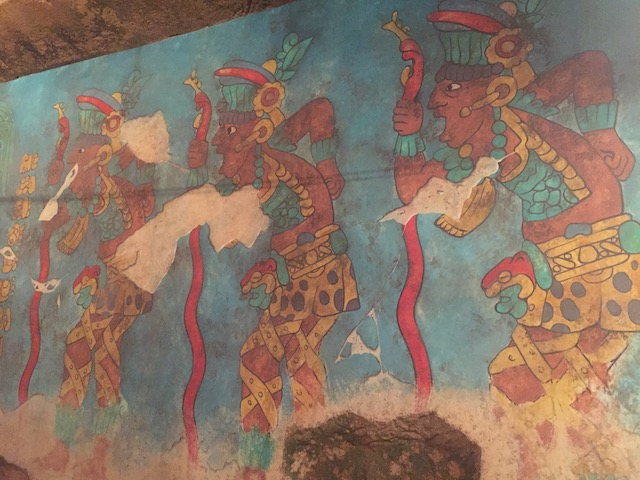
This one is slightly better than the CA one, but they're both super good. More Disney parks need Indiana Jones!
So with So-Cal being my home, I'm very picky with Mexican food and have a high standard. But people kept giving this place good reviews. So...let's see how the Japanese do Mexican food.
So I wound up getting their Christmas special, since it was a really good deal. It was really good, particuarly that Vegtable Bacon Soup. But I don't think it was the best representation of Mexican food. But hey. Still really good.
Wow. Disney even managed to theme Old-School New York to Christmas!? Damn, these guys are good!
 So I was highly recommended that I see Big Band Beat, which is basically a Mickey Mouse Jazz Show. Eh. It was good and all, but I wouldn't say it's a must-do when visiting Disneysea (Sorry Brandon).
So I was highly recommended that I see Big Band Beat, which is basically a Mickey Mouse Jazz Show. Eh. It was good and all, but I wouldn't say it's a must-do when visiting Disneysea (Sorry Brandon).
 Have I mentioned that I love that they just plopped a giant volcano into this park?
Have I mentioned that I love that they just plopped a giant volcano into this park?
OK. Time to head back to Mermaid Lagoon.
HOLY CRAP! They actually make this feel underwater! I love the theming down here! Gives me memories of the old Little Mermaid stuff I saw as a kid.
Nothing special about these teacups. Well other than the fact that they're F*CKING UNDERWATER!!!
OK. One of the foods I remember hearing hype about from other trip reports was sea salt ice cream from Ariel's seashell. This isn't quite that, but it's close enough! And damn it! I want my ice cream!
So this is a Monaka, which is usually a pastery filled with red bean creme and goes with tea. But they also can be filled with ice cream. Like here. It's sea salt ice cream, with strawberry jam, in between two wafers. And DAMN!!!! SO GOOD!!! Seriously, Monakas need to catch on in America.
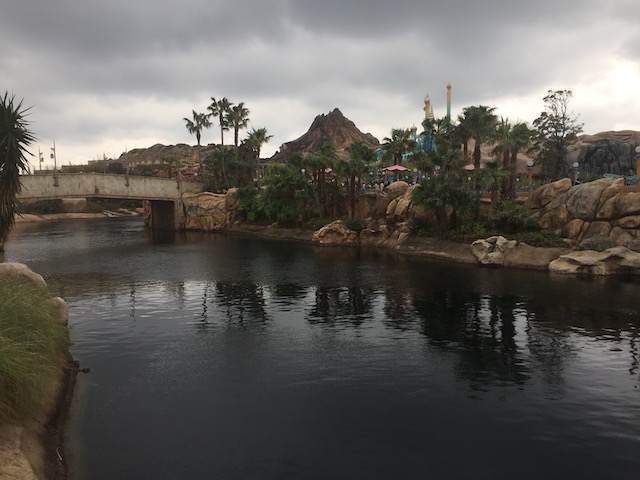
It's impossible to take a bad photograph at this park. It's that amazing.
OK. Let's consume more food. This time, we're downing a Carmel Milk Cocktail with Coffee Jello.
Not sure if I was recommended this from a friend, read about it from someone elses Photo TR, or how I found out about it. But it was good. It was basically a Starbucks drink, only it can get you drunk.
 What comes after alcohol? ROLLER COASTER!!! =D
What comes after alcohol? ROLLER COASTER!!! =D
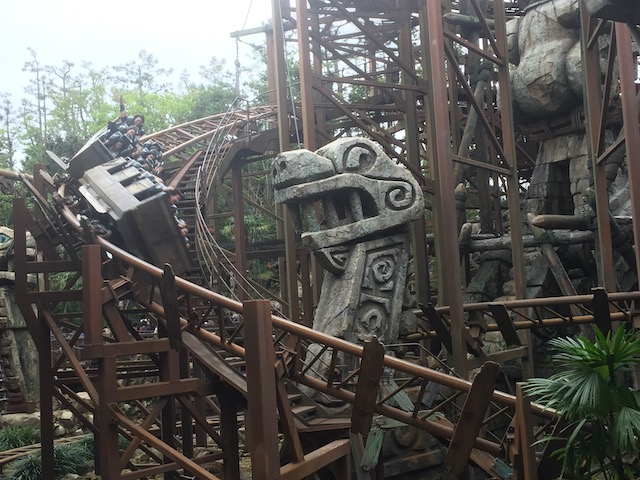
Hard to believe that the big roller coaster, while fun, isn't among the best rides here.
 Fire! Fire always makes any roller coaster better! Just ask Six Flags! =P
Fire! Fire always makes any roller coaster better! Just ask Six Flags! =P
Hell Yes! I want more rides on Sinbad!
"Meow! You're not getting away from me asshole! I'm attacking you because I'm Chandu!"
Can we have this in the Middle East please? F*ck the hijab! I want this damn it!
Another thing worth noting about this ride. Remember when I compared it to Small World earlier? Well part of the reason is not only because it's a long dark ride with a bunch of animatronics as you travel across many places. But also, because they both have an INCREDIBLY catchy song. But unlike on Small World, you LIKE this earworm. Seriously, Compass Of Your Heart is AWESOME!!! Listening to that song right now as I make this update. I WANNA GO BACK TO DISNEYSEA!!! =(
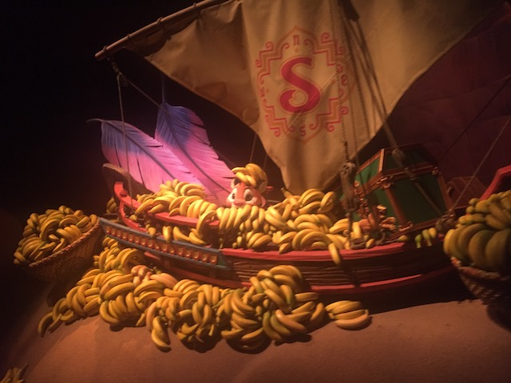
"Meow! ALL the bananas are mine! I deserve them all! Why? Because I'm Chandu!"
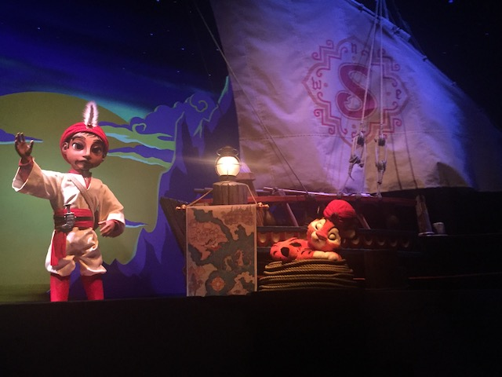
Sinbad wishes everyone safe journeys and to check out his ride. I'd say it's criminally underrated, but recently, I've been hearing A LOT of people call this ride incredibly underrated and it's been getting A LOT more love recently. This makes me very happy.
I know I can't call it the best carousel ever because Cedar Downs exists, but this is seriously up there as far as carousels goes (Hmm. Top 10 Carousels List? Nah).
Now if you know me, you'll know that I RARELY buy park souviners. Prior to this, the last park souviner I bought was way back when I visited f*cking Canobie Lake Park. But at Tokyo Disney, you just have to get something. And I thought "I love Chandu. I really love Chandu. You know what? I want my own Chandu!". So I went and bought one of these stuffed Chandus. And I love having a peice of Tokyo Disneysea in my room.
Oh look at the time. Our Journey fastpass is finally ready!
*gasp* If we're back at Tokyo Disneysea! Then...gotta have more Journey!
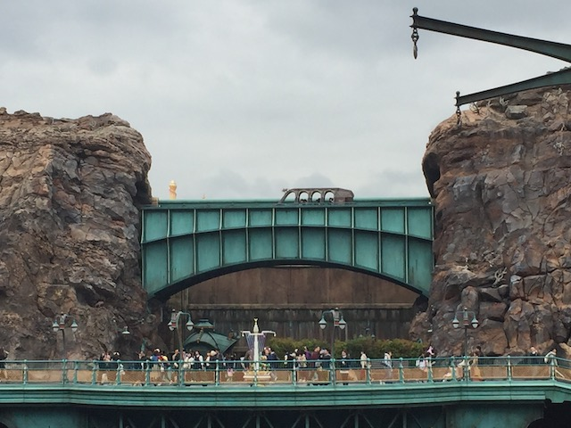
Fun fact. That bridge is actually the brake run for Journey to the Center of the Earth.
Hmm. Perhaps I should've checked out the ship in greater detail. Perhaps check out one of the resteraunts here.
 Oh Shikiri! Where are you!?
Oh Shikiri! Where are you!?
And now, time for the last one. Popcorn Flavor #8. Garlic Shrimp.
Sadly, I wasn't a huge fan of this one. I mean, yeah. That shouldn't be too surprising since....it's Garlic Shrimp Popcorn. It doesn't sound good. But...neither does Curry Popcorn or Soy Sauce & Butter Popcorn. And both of those are amazing. So I'm very saddened by the Garlic Shrimp popcorn having a...weird taste. Yeah. I won't get this again next time.
And with all the Popcorns tried (The only ones we didn't get here were Salted and Carmel, since those two are just too similar to what you can get back home), I think it only is fair that we do a Top 8 List and rank all of the popcorn we tried.
Yeah, it feels wrong to put the Savory Popcorns and the Sweet Popcorns in the same list since...apples and oranges. But nevertheless, here's a mini in-update Top 8 List.
TOP 8 POPCORN FLAVORS AT TOKYO DISNEY!!!
#8. Garlic Shrimp
#7. Barbecue
#6. Honey
#5. Chocolate
#4. Strawberry
#3. Black Pepper
#2. Curry
#1. Soy Sauce & Butter
Tokyo Disneysea. You are amazing and I can't wait to come back on my next Japan trip, which needs to happen SOON!!!
And now, we're back at Tokyo Disneyland for the rest of the night.
I think you understand that this park gets busy by now. I don't need anymore crowd photos in this update.
Hey look! A ride at Tokyo Disneyland that I haven't done and you can't do back home. Better check it out.
And of course, the Country Bear Jamboree is out celebrating Christmas along with the rest of Tokyo Disneyland.
 I know a lot of older people are still nostalgic from when this was back at Disneyland. Eh...It was good to ride something I can't do at home. But I'm not gonna pretend that I'm a big fan of this show.
I know a lot of older people are still nostalgic from when this was back at Disneyland. Eh...It was good to ride something I can't do at home. But I'm not gonna pretend that I'm a big fan of this show.
This bear still hasn't gotten over the fact that they got rid of Country Bear Jamboree at Disneyland.
When Santa's reindeer misbehaves, he decapitates them and hangs them on his wall. >=)
Oh yeah. We forgot to mention that we wish you a Happy New Year (Oh yeah. 2019 is already halfway over. Hopefully the Happy New Year actually came to fruition).
Is it a smart idea to ride Splash Mountain at night? Do you seriously us to make smart decisions?
Sure. We'll give you a canoe here. We trust people way more here than we do at the other Disney Parks.
And yeah. The Mark Twain River Boat is here too.
I'm not the biggest Jungle Cruise fan, but hey. Might as well check out Japanese Jungle Cruise to see if there's anything different here.
Hippos are big boy animals! They don't need no stinkin' humans brushing their teeth for them! =P
I'm really happy I did this, as Jungle Cruise here is so much better! Who would've guessed that Jungle Cruise would've been the biggest surprise of Tokyo Disney?
This Jungle Cruise has a couple bonus parts that you don't get in the California (and presumably Florida) Jungle Cruise.
This baby elephant isn't just bathing in the jungle! No bitch! You bring me a pink strobe light! I gotta be fancy in this jungle!
 Worst loss of virginity ever.
Worst loss of virginity ever.
 You know, we've all seen the backside of water. But when are we gonna get that sweet side-water?
You know, we've all seen the backside of water. But when are we gonna get that sweet side-water?
For instance, on Japanese Jungle Cruise, your boat actually go into a temple, and....you get an intersting light show in there.
OK. The final thing recommended to me foodwise (Well, not really. But I didn't get around to the other recommendations) were the Mickey Waffles.
Just in case you don't know how to make a food as easy as waffles.
Hmm. Black Pepper Teriyaki Chicken Roll for Breakfast. Strawberry Mickey Waffles for Dinner. Sounds right to me.
Hmm. I saw all the parades and shows yesterday. So I figured, I might as well check out the Fantasyland dark rides now since now's the time they all have a short line.
I may not be the biggest Small World fan, but the light package it has is always great.
Now there's a ride I haven't ridden in forever.
I see that smile that just screams "I'm gonna sell these kids into slavery" on you Coachman.
I know its weird comparing Fantasyland Dark Rides, but Tokyo Snow White somehow has an even more abrupt ending than the California version.
 One upside about all the night parades. All the Fantasyland dark rides get short lines, that means MORE POOH RIDES!!!
One upside about all the night parades. All the Fantasyland dark rides get short lines, that means MORE POOH RIDES!!!
I love Fantasyland at night.
"Psst. Hey Pooh. Take this balloon so you can fly and avoid TS...Oh wait. There is no TSA in Japan. Never mind."
"HEY POOH! QUIT SPYING ON ME!"
Psychadelic Dream Part of Pooh's Hunny Hunt.
But I don't want it to be "The End". =(
 Aww. Last ride at Tokyo Disneyland. But hey. Closing out on Space Mountian is pretty cool.
Aww. Last ride at Tokyo Disneyland. But hey. Closing out on Space Mountian is pretty cool.
 This place is amazing.
This place is amazing.
I seriously miss Pooh's Hunny Hunt. =(
Again, I never stayed there. But the Tokyo Disneyland hotel does look really cool.
The Tokyo Disney Resort is simply amazing. Without a doubt my favorite theme park, my favorite Disney property, and I just can't say enough good things about this place. 3 days is not enough! And considering all the stuff they've got under construction, there's gonna be even more cool stuff to check out. Well, at least I have a couple more days of Japan left. So that's gonna be fun.
Yokohama Cosmoworld
Home
|